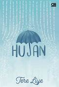
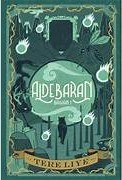

Penulis : Tere Liye
Tahun Terbit : 2016
Diterbitkan : Sabak Grip Nusantara
Kutipan : Jangan pernah jatuh cinta saat hujan. Karena ketika besok lusa kamu patah hati, setiap kali hujan turun, kamu akan terkenang dengan kejadian menyakitkan itu about:

Penulis : Tere Liye
Tahun Terbit : 2021
Diterbitkan : Sabak Grip Nusantara
Kutipan : Meski semua hal itu adalah kenangan menyakitkan, kita baru merasa kehilangan setelah sesuatu itu telah benar-benar pergi, tidak akan mungkin kembali lagi. about:

Penulis : tere Liye
Tahun Terbit : 2022
Diterbitkan : Sabak Grip Nusantara
Kutipan : Kalian mencari di tempat yang gelap. Tidak ada siapapun di klan matahari minor selain kesedihan dan penderitaan. Klan itu dikutuk about:

Penulis : Tere Liye
Tahun Terbit : 2025
Diterbitkan : Sabak Grip Nusantara
Kutipan : Tapi dia pasti kecewa, sangat kecewa. Dan itu lebih serius dibanding marah Tapi mau bagaimana lagi? Kamu membakar ayahnya. about:

Penulis : Tere Liye
Tahun Terbit : 2016
Diterbitkan : Sabak Grip Nusantara
Kutipan : Dalam kehidupan, masa sekarang dan masa depan jauh lebih penting, karena masa lalu, sehebat apa pun itu telah tertinggal di belakang. about: